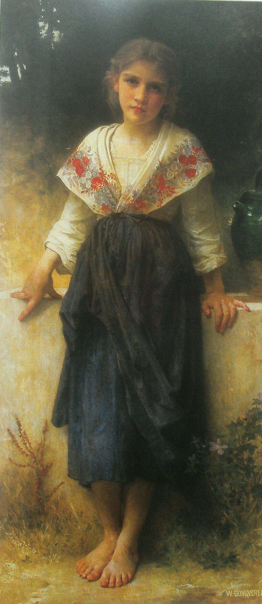
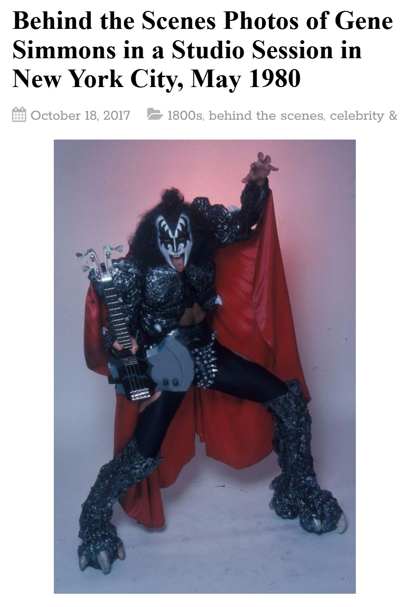
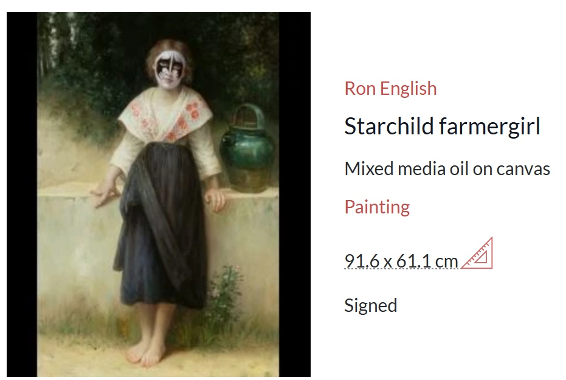

Literature
Ron English, Abject Expressionism: The Art of Ron English (San Francisco: Last Gasp, 2007), p. 181. ISBN 978-0867196894.
Notes
Also known as Starchild Farmergirl.
This work references William-Adolphe Bouguereau’s Un moment de repos.
This painting references Gene Simmons of the band KISS in his signature makeup.
This work appears on MutualArt’s artwork page under the alternate title Starchild Farmergirl.
Ancillary Documentation
The following materials document visual source material and online artwork-page circulation for this work.


